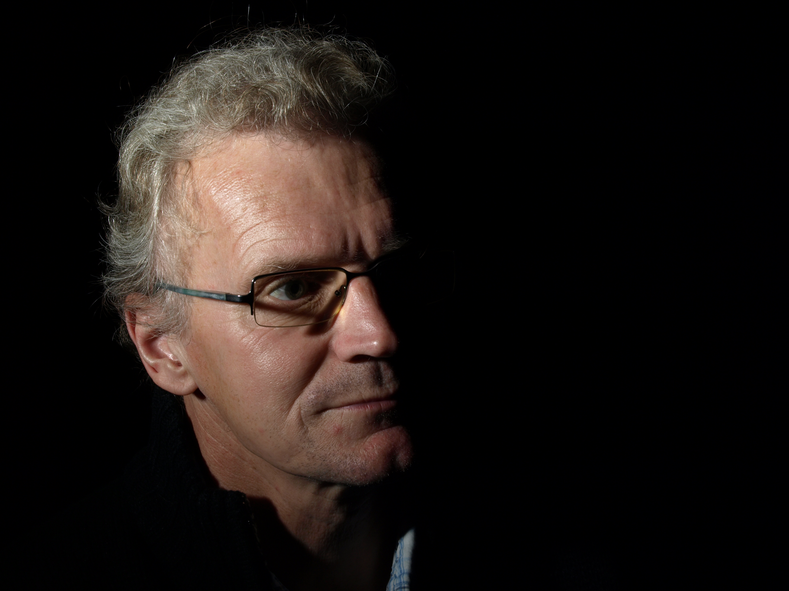
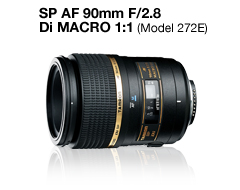

Presentation

Hej!
Jag har under hela mitt liv jobbat som tvättmaskinsreparatör och blev för ett par år sedan väldigt intresserad av kameror och fotografering.
Ända sedan jag var liten har jag varit intresserad av djur, natur och friluftsliv vilket ledde till att jag började fotografera just djur och natur.
När jag inte jobbar eller är ute och fotografera så är jag med min familj som består av en fru, 12 barn och en bläckfisk som husddjur.
Min utrustning

Tamron 90mm f2.8 DI Macro 1:1
Jag har en Canon EOS 40d som har ett par år på nacken. Till den så har jag ett fast teleobjektiv på 400mm
som är perfekt för att ta bilder på fåglar och andra djur som är långt bort. Det är ett riktigt skarpt objektiv
med snabb auto fokus.
Jag har ett 90mm Tamron som jag använder till att ta närbilder med, det är ett bra och ljusstarkt objektiv med bra skärpa.
Till landsskapsbilder använder jag ett ultravidvinkelobjektiv på 10-20mm från sigma.
I galleriet finns det bilder tagna med denna utrustningen.